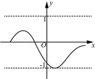

2014年北京市中考数学试题 · 数学解答题 第25题
25．（8分）（2014•北京）对某一个函数给出如下定义：若存在实数M＞0，对于任意的函数值y，都满足﹣M＜y≤M，则称这个函数是有界函数，在所有满足条件的M中，其最小值称为这个函数的边界值．例如，如图中的函数是有界函数，其边界值是1．
（1）分别判断函数 y=（x＞0）和y=x+1（﹣4≤x≤2）是不是有界函数？若是有界函数，求其边界值；
（2）若函数y=﹣x+1（a≤x≤b，b＞a）的边界值是2，且这个函数的最大值也是2，求b的取值范围；
（3）将函数 y=x2（﹣1≤x≤m，m≥0）的图象向下平移m个单位，得到的函数的边界值是t，当m在什么范围时，满足≤t≤1？
